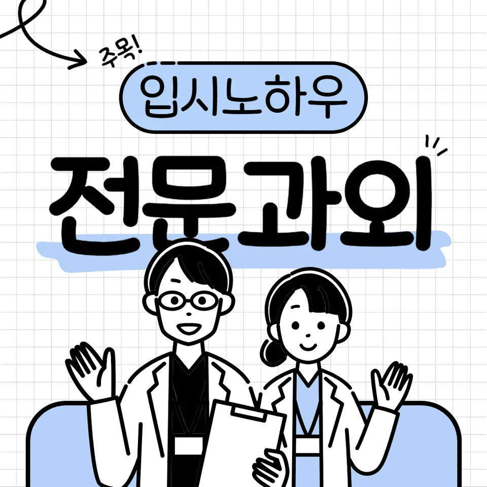

PageType : SUBJECT
URL : /경기도과외/의정부시과외/가능동과외/가능동수학과외/
지역 교육환경이 수학 학습에 미치는 영향
가능동수학과외는 학원 밀집도나 학습 분위기가 비교적 또렷한 지역 특성상, 학생들이 수학을 “시험 과목”으로 먼저 체감하는 시기가 빠르게 나타납니다. 학교에서 진도가 진행되는 속도에 맞춰 문제 풀이를 따라가려는 마음이 커지면서, 개념을 이해하기보다 정답 흐름을 잡으려는 선택이 늘어납니다. 이때 가능동수학과외를 선택한 학생들은 수업이 끝난 뒤에도 어떤 단원이 어떤 방식으로 평가되는지 점검하는 습관을 함께 배우는 편입니다.
가정에서는 인터넷 강의나 학습지로 보완하려는 경향이 생기지만, 학교 수업의 언어와 교사의 채점 기준이 그대로 전환되지 않으면 공부 방향이 어긋나기도 합니다. 가능동수학과외에서는 학교에서 사용한 표현, 서술 습관, 풀이 과정의 범위를 함께 정리해 두어 학생이 “어디까지 쓰면 되는지”를 덜 흔들리게 합니다. 그 결과 학습 중 불안이 줄어들면, 학생은 오답을 단순 실수로 넘기지 않고 왜 막혔는지까지 확인하게 됩니다.
지역의 수학 학습 환경은 결국 공부 시간보다 리듬에 영향을 줍니다. 가능동수학과외를 통해 주간 단위로 예습과 복습의 간격을 조정하면, 시험이 다가올 때 갑자기 몰아치는 패턴이 완화됩니다. 가능동수학과외를 오래 이용하는 학생일수록 “지금 해야 할 공부가 무엇인지”를 스스로 고르는 속도가 빨라집니다.
학교별 평가 방식과 학습 방향
학교마다 내신에서 보는 방식이 다르면, 학생이 공부하는 방향도 흔들립니다. 일부 학교는 서술형 비중이 커서 계산 정확도만큼 풀이 전개가 중요해지고, 또 다른 학교는 단원별 개념 점검이 촘촘해집니다. 가능동수학과외에서는 같은 개념이라도 학교별 채점 포인트에 맞춰 표현을 다듬는 연습을 더 자주 넣습니다.
수행평가가 있는 학교에서는 발표나 활동 기록이 수학 태도와 연결되기도 합니다. 이때 학생은 수업 중 질문을 정리해 두고, 집에서는 관련 문제를 찾아 연결해보며 학습 내용을 “이해-적용”으로 바꾸려 합니다. 가능동수학과외에서는 단원 학습을 단절시키지 않고, 활동 이후에 이어지는 문제 유형이 무엇인지 짚어 주는 방식으로 방향을 고정합니다.
시험 전에는 학습량 자체가 늘어나는 경우가 많지만, 가능동수학과외는 분량보다 “어떤 기준으로 점수를 만드는지”를 우선으로 정리합니다. 학교에서 자주 감점되는 부분을 기준으로 점검하면, 학생은 공부 시간을 늘리지 않고도 효율을 끌어올리기 시작합니다.
학생들이 수학을 어려워하는 주요 원인
대부분의 어려움은 공식 자체보다 개념의 연결이 끊길 때 생깁니다. 수학 시간에 이해했다고 느꼈더라도, 다음 단원에서 문제를 읽는 방식이 바뀌면 다시 막힙니다. 이 과정에서 학생은 문제를 “풀어야 한다”는 압박만 남기고, 어디에서 사고가 끊겼는지 기록을 남기지 못합니다. 가능동수학과외에서는 학생이 풀이 중 스스로 멈춘 지점을 말로 정리하도록 도와, 막힘의 원인을 명확히 합니다.
또 다른 요인은 오답을 보는 방식의 차이입니다. 틀린 문제를 다시 풀 때도 답만 확인하면 같은 실수가 반복됩니다. 가능동수학과외에서는 오답을 유형으로 분류해 “실수형, 이해부족형, 문제해석형”처럼 원인을 분리하고, 같은 오류가 다음 문제에서 재등장하지 않게 학습 흐름을 조정합니다. 그러면 학생은 복습이 귀찮은 작업이 아니라 다음 시험 점검의 출발점이 됩니다.
학생이 어려움을 체감하는 시기는 대체로 중간단원에서 커집니다. 예전에는 계산이 익숙해서 풀리던 문제도, 개념을 활용해야 하는 단계에서 사고력이 필요해지기 때문입니다. 가능동수학과외는 그 전환 시점을 놓치지 않고, 학생이 “왜 이 방식이 필요한지”를 설명하는 연습으로 넘어갈 시간을 만듭니다.
학년 변화에 따른 수학 학습의 차이
학년이 올라가며 수학 학습 부담은 단순히 양이 늘어나는 형태로만 나타나지 않습니다. 같은 단원이라도 난도는 사고 단계가 높아지는 방향으로 변합니다. 예컨대 처음에는 문제를 보고 방법을 고르는 데 충분했다면, 이후에는 조건을 해석하고 관계를 추론해야 합니다. 가능동수학과외는 학년 변화에 따라 학습 방식 자체를 조정해, 학생이 문제 해결의 단계를 단계적으로 경험하게 합니다.
상위 학년으로 갈수록 내신의 세부 기준이 더 촘촘해지고, 시험 범위도 넓어집니다. 이 시기에 학생들은 “무엇부터 복습할지”를 결정하지 못해 준비 시간이 흔들립니다. 가능동수학과외에서는 주간 학습 계획을 세울 때 우선순위를 함께 정하고, 공부습관이 유지되는지 점검합니다.
또한 학년이 올라가면 자기주도학습의 비중이 커집니다. 스스로 계획을 세우는 과정이 자리 잡기 시작하면, 학생은 오답을 ‘풀이의 기록’으로 남기기 시작합니다. 가능동수학과외는 이런 기록 습관이 자연스럽게 이어지도록, 시험 기간에도 같은 관리를 반복해 루틴을 만듭니다.
꾸준한 학습이 실력으로 이어지는 과정
수학은 한 번 이해했다고 끝나지 않고, 다시 사용해야 강해집니다. 복습을 언제, 얼마나, 어떤 방식으로 하는지가 실력 차이를 만듭니다. 가능동수학과외에서는 “학습 직후 정리-며칠 뒤 재적용-시험 전 점검”처럼 복습이 성과로 연결되는 흐름을 잡아 둡니다.
꾸준함은 단순히 오래 공부하는 태도가 아니라, 공부습관의 일관성에서 나옵니다. 학생이 계획을 세운 뒤 일정이 흔들릴 때마다 원인을 찾지 못하면 리듬이 깨집니다. 가능동수학과외는 시간 배분과 함께, 학생이 계획을 조절하는 방법까지 훈련합니다. 이 과정에서 학생은 시간을 효율적으로 활용하는 감각을 배웁니다.
학습 과정에서 확인해야 할 핵심은 이해의 지속성입니다. 개념을 이해했는지, 적용 문제에서 같은 오류가 줄어드는지, 오답을 줄이기 위한 복습이 실제로 바뀌고 있는지 확인하는 일이 중요합니다. 가능동수학과외는 학생이 스스로 확인할 수 있도록 체크 방식도 함께 만들어 둡니다.
문제 해결력을 키우는 학습 습관
문제 해결력은 문제를 많이 푸는 것만으로 생기지 않습니다. 문제를 풀 때 사고의 흐름을 기록하고, 조건과 목표를 구분하며, 선택한 전략이 왜 맞는지 말로 정리하는 과정이 필요합니다. 가능동수학과외에서는 풀이 중간의 선택을 설명하게 하여, 학생이 단순한 절차가 아니라 사고를 다듬도록 만듭니다.
오답을 분석할 때도 습관이 중요합니다. 같은 유형에서 반복 실수가 나오면, 학생은 문제를 다시 풀기보다 왜 처음에 선택이 틀어졌는지 되짚어야 합니다. 가능동수학과외에서는 오답 노트를 “틀린 답”이 아니라 “다음에 바꿀 행동” 중심으로 구성하게 합니다. 이런 방식은 복습이 단순 반복이 아니라 사고력 훈련으로 이어지게 만듭니다.
또 시험 기간에는 학습 패턴이 달라지기 쉽습니다. 학생은 불안을 줄이려고 푸는 속도를 올리지만, 급한 속도는 실수의 빈도를 높입니다. 가능동수학과외는 시험 주간에도 체크 시간을 남겨 두어, 계획적인 학습이 흔들리지 않게 합니다.
복습과 학습 관리가 중요한 이유
복습은 성적을 올리기 위한 마지막 단계가 아니라, 학습이 누적되는 구조 자체입니다. 어떤 학생은 수업을 이해한 듯 보이지만, 다음 주에 같은 유형을 보면 다시 헤매곤 합니다. 가능동수학과외에서는 개념이 “다시 떠오르는지”를 기준으로 복습을 설계해, 학생의 기억과 적용을 동시에 다룹니다.
학습 관리는 단순한 시간표가 아닙니다. 내신 범위가 바뀌거나 수행평가 준비가 겹치면 공부 우선순위가 바뀌어야 합니다. 이때 학부모는 흔히 “무엇을 더 해야 하는지”를 걱정하게 되는데, 가능동수학과외는 학교 일정과 평가 구조를 함께 고려해 집에서의 공부가 흔들리지 않게 연결합니다. 학생이 자기주도학습으로 넘어가는 과정도 이 관리에서 자연스럽게 만들어집니다.
복습이 제대로 되면 오답의 반복이 줄어듭니다. 틀린 문제를 다시 풀되, 같은 실수가 왜 생기는지 확인하고 다음 문제에서 행동을 수정하는 루틴이 자리 잡기 때문입니다. 가능동수학과외는 반복을 줄이기 위한 분석을 먼저 하고, 그 다음에 연습량을 조절합니다.
수학 학습에서 확인해야 할 핵심 요소
학교 수업을 따라가는 것만으로는 부족할 때가 많습니다. 학생이 개념을 이해하고 활용하는 흐름이 이어지는지, 문제 해결 과정에서 사고가 움직이는지 확인하는 일이 필요합니다. 가능동수학과외를 통해 학습이 안정되는 학생들은 공통적으로 다음 요소를 체크합니다.
- 학교 수업과 시험 범위에 맞는 학습 계획을 세우고 있는지 확인합니다.
- 개념을 암기하는 데 그치지 않고 문제 해결 과정에 활용하고 있는지 점검합니다.
- 틀린 문제를 다시 풀어보며 실수의 원인을 꾸준히 분석합니다.
- 단기 성과보다 지속적인 복습과 학습 습관을 유지하고 있는지 살펴봅니다.
이 핵심 요소들은 학생의 자신감 형성에도 영향을 줍니다. 처음에는 작은 이해의 성취가 쌓이며, 그 다음에는 오답을 다루는 방식이 바뀌고, 결국 사고력이 성장하는 경험으로 이어집니다. 학부모 역시 “무엇을 어떻게 봐야 하는지”가 정리되면 불안이 줄어들고, 학교와 가정의 학습 환경이 같은 방향으로 맞춰집니다.
자주 묻는 질문
수학 학습은 언제부터 체계적으로 준비하는 것이 좋을까요?
개념이 단원 경계에서 끊기기 시작하기 전부터, 예습-수업-복습의 간격을 정해 공부 리듬을 만드는 것이 효과적입니다. 학생이 시험 기간에만 급히 달리는 패턴을 보이면, 그 시점부터 관리 계획을 먼저 세우는 편이 좋습니다.
학교 내신과 수행평가는 어떻게 함께 준비하면 좋을까요?
내신 범위를 기준으로 개념과 문제 해결 과정을 묶고, 수행평가 준비가 끼는 주에는 기록과 설명 능력이 드러나는 활동을 함께 정리합니다. 학교에서 요구하는 표현 방식이 무엇인지 확인해 학습 결과가 채점 기준과 연결되도록 조정하는 것이 중요합니다.
수학 개념이 부족한 학생도 학습 흐름을 따라갈 수 있을까요?
가능합니다. 다만 부족한 개념을 한 번에 메우기보다, 학생이 막히는 지점부터 다시 연결해 주어야 합니다. 오답을 분석해 “어떤 조건에서 이해가 멈췄는지”가 드러나면 학습 흐름이 점차 이어집니다.
문제 해결력은 어떤 과정을 통해 향상될 수 있을까요?
문제를 풀고 끝내는 것이 아니라, 조건 해석-전략 선택-풀이 전개-검산까지 사고 과정을 확인하는 습관이 쌓일 때 성장합니다. 틀린 문제도 같은 유형에서 반복되지 않도록 행동을 수정하는 복습 루틴이 함께 들어가면 변화가 빨라집니다.
꾸준한 학습 습관은 어떻게 만들어갈 수 있을까요?
큰 계획보다 작은 반복이 먼저 자리 잡아야 합니다. 매주 확인할 항목을 정해두고, 시험 기간에도 오답 점검과 복습 시간을 고정하면 공부습관이 흔들리지 않습니다. 학생이 계획을 스스로 조정할 수 있게 되면 자기주도학습이 점차 안정됩니다.
